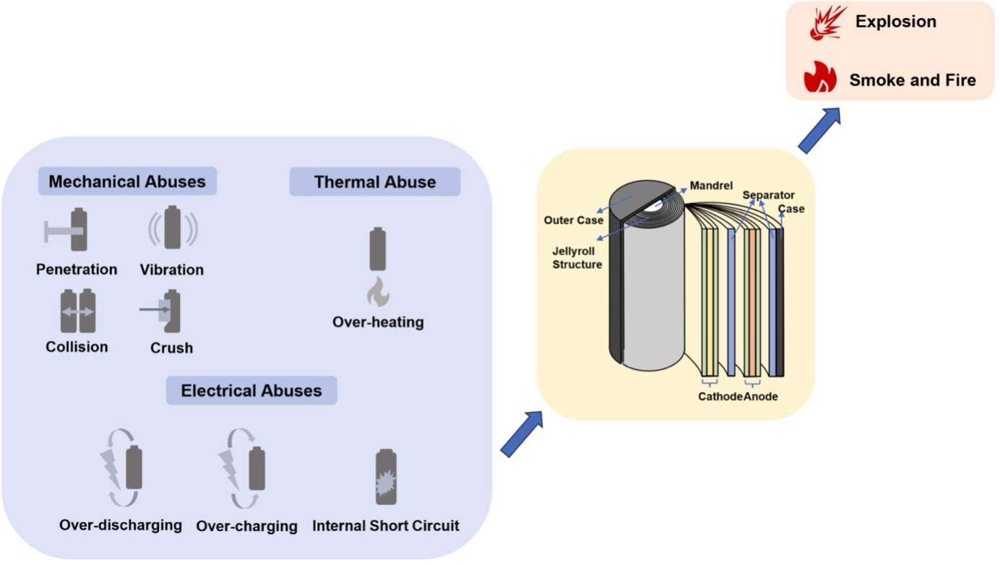
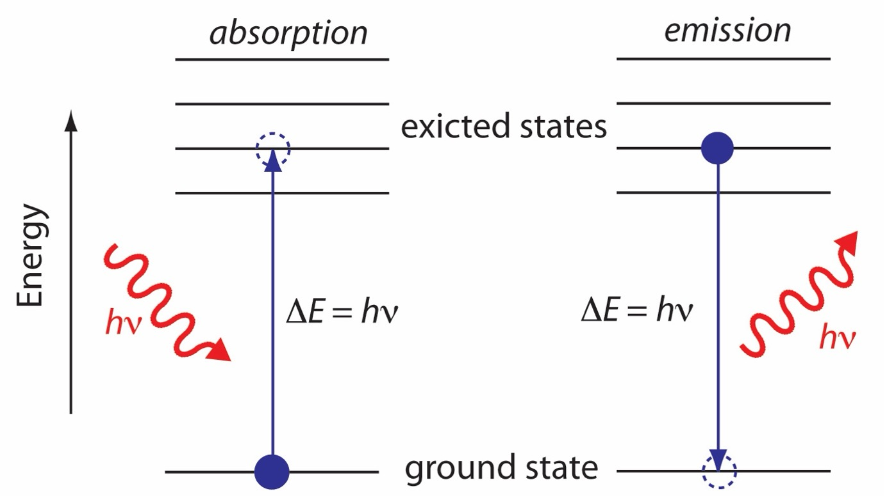

My work sits at the uncomfortable but fascinating edge where energy
storage stops behaving politely. I am a PhD student in Physics working
on thermal runaway in lithium-ion batteries, a failure process in which
a battery transitions from a controlled electrochemical device into a
rapidly evolving chemical reactor.
Once initiated, thermal runaway is fast, violent, and unforgiving.
Temperature rises within seconds, gases are released, materials
decompose, and the system quickly outruns any simple safety mechanism.
Understanding this process in detail is no longer optional. It is a
prerequisite for safe electrification.

Typical mechanical, electrical, and thermal abuse pathways that can
initiate thermal runaway in lithium-ion cells.
Yixin Dai, Aidin Panahi, Thermal runaway process in lithium-ion batteries: A review, Next Energy, 2025.
At a high level, thermal runaway begins when heat generation inside
a cell exceeds its ability to dissipate that heat. The trigger can be
mechanical abuse, electrical abuse, or external heating. Internally,
it unfolds as a cascade.
I use laser-based diagnostics to observe thermal runaway as it unfolds,
in real time, without physical contact. Lasers allow remote, selective,
and extremely fast interrogation of matter. At the core of this approach is spectroscopy.
Performed fast enough, this yields time-resolved chemistry, not merely an outcome.

Simplified schematic of absorption and emission processes used in laser-based spectroscopic diagnostics.
In short, I am trying to turn a catastrophic event into a measurable,
understandable, and ultimately manageable phenomenon.